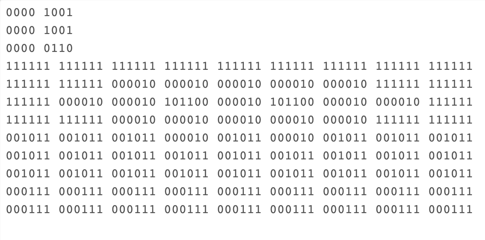

Favicon is short for Favourite Icon, and is an icon made used for websites.
Favicons are created on a grid made of binary digits. Therefore a 4x4 grid will have 16bits of color.
I created mine using the following website: https://studio.code.org/s/pixelation
My icon in binary looks like the following:
 Go Home